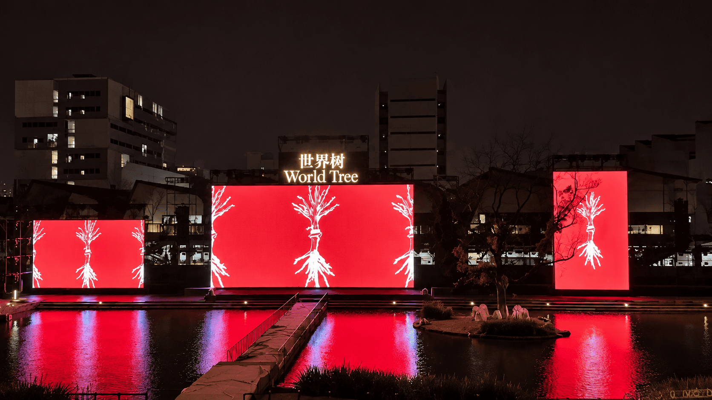
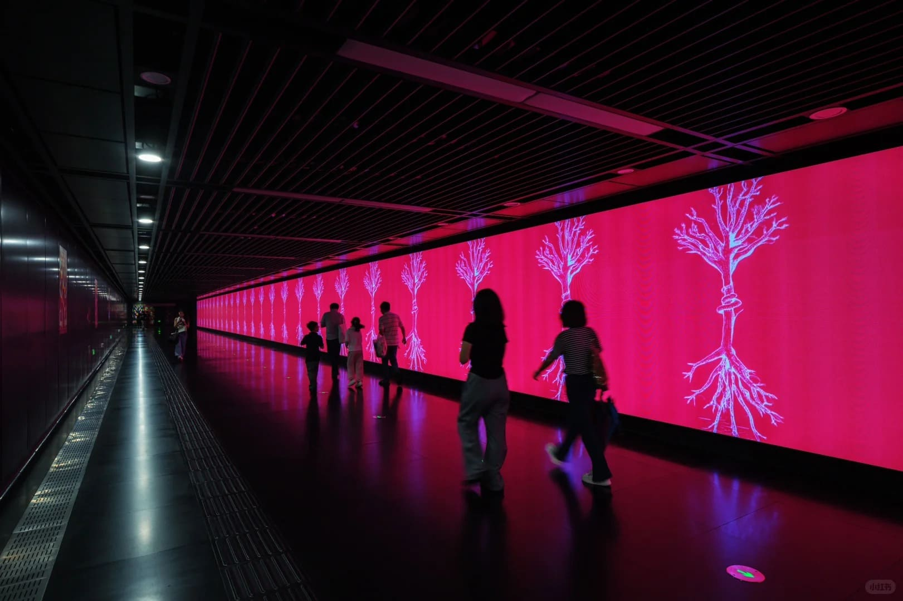

World Tree
PROJECT INFO
CLIENT
China Academy of Art
FORMAT
AIGC Animation
YEAR
2024
ROLE
AIGC Animation Production
TOOLS
Cinema 4D / Stable Diffusion
PROJECT
2024 China Academy of Art Graduation Season Key Visual
《世界树》是中国美术学院2024年毕业季主视觉项目。我负责其中的 AIGC 动画制作，使用 Cinema 4D 与 Stable Diffusion，将项目的视觉概念转化为动态影像。
INSTALLATION

